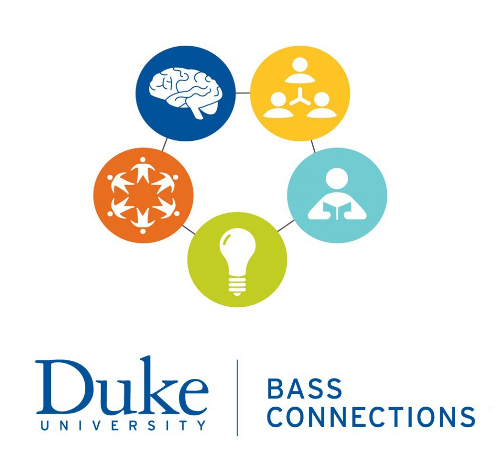
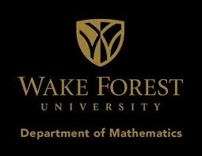

Sponsors
A huge thanks to our 2019 sponsors, ASA DataFestTM at Duke cannot run without your support!
Considering sponsoring ASA DataFestTM at Duke? Click here for more information.
Cauchy Sponsors

iiD is all about Making Data Matter.
Pareto Sponsors

SSRI brings together researchers with interests in problems that cross the various social and behavioral sciences, including problems that connect with the humanities and natural sciences. We promote multidisciplinary collaboration among such scholars as they work on important social issues that are challenging to address fully from within any given discipline.

2nd Order Solutions is a credit risk consultancy focused on creating value for financial services clients through ground-breaking analytic and modeling problem solving. We are committed to improving financial and risk results by partnering with clients to create winning strategies and sustainable competitive advantage.

Bass Connections bridges the classroom and the real world, giving students a chance to roll up their sleeves and tackle complex societal problems alongside faculty from across Duke. Working in interdisciplinary teams, graduate and undergraduate students collaborate with faculty on cutting-edge research that spans subjects, demographic groups and borders. Bass Connections builds on Duke’s culture of collaboration and fosters knowledge in service to society.
Lognormal Sponsors

Trinity College of Arts & Sciences awards nearly 80 percent of undergraduate degrees at Duke, and nearly 40 percent of all graduate degrees in disciplines across the arts, humanities, natural sciences and social sciences. We offer bachelor of arts and bachelor science programs; master of arts, master of fine arts and master of science programs; doctoral programs; and specialized certificate programs for both undergraduate and graduate students.

JMP (pronounced "jump") is a business unit of SAS that produces interactive software for desktop statistical discovery. John Sall, SAS co-founder and Executive Vice President, created this dynamic software in 1989 and remains its chief architect and leader of the JMP division. Developed with scientists and engineers in mind, JMP has grown into a family of statistical discovery tools tailored to meet specific needs and used worldwide in almost every industry. By combining interactive data analysis with visualization, JMP accelerates the path to useful insights and meaningful discoveries. Find out more at jmp.com.

The Department of Statistical Science at Duke is nationally ranked in the top 5 research departments and as a top 10 graduate program. The Department currently (mid-late 2015) has 18 faculty, ~45 PhD students, ~70 MS students, ~70 research-active undergraduate majors, numerous postdocs, visitors, and affiliated researchers listed under People. Recognized as the world's leading center for Bayesian statistics and its interdisciplinary applications, the Department is a Duke campus hub for statistical and computational research.

The Department of Statistics at NC State is among the nation's oldest and most prestigious, having been founded by renowned statistician Gertrude Cox in 1941. The Department provides a dynamic environment for teaching, core research, and collaborative research across disciplines, with formal programs in biostatistics, statistical genetics, and environmental, financial, and mathematical statistics. It also has emerging efforts in statistics education and statistical computing and big data.

The Department of Statistics and Operations Research specializes in inference, decision-making, and data analysis involving complex models and systems exhibiting both deterministic and random behavior. We focus on developing and analyzing the necessary quantitative and computational tools to enable practitioners to solve problems in statistical and probabilistic analysis, modeling, optimization, and the evaluation of system performance.

The Department of Mathematics and Statistics at Wake Forest supports programs in mathematics, statistics, and applied mathematics, along with interdisciplinary majors. The statistics program focuses on developing students with a strong core in the mathematical foundations of statistics, engaging students in applied, interdisciplinary projects using statistical computing, and offering mentored undergraduate and master's level research experiences.

With a core management curriculum and a wide variety of technical electives, Duke's Master of Engineering Management (MEM) Program offers early-career engineers a tech-savvy alternative to an MBA. Offered by the Pratt School of Engineering with the support of Duke’s Fuqua School of Business and the Duke School of Law, the MEM program prepares engineering and science graduates to become future industry leaders.
Weibull Sponsors

The technology to amass data exceeds our abilities to make use of it. People all over the world are turning to R, an open source statistical language, to make sense of data. Inspired by the innovations of R users in science, education, and industry, RStudio develops free and open tools for R and enterprise-ready professional products for teams to scale and share work. Our goal is to empower users to be productive with R.
Acknowledgements
Moonlight Developments is a web development company located in the beautiful and rapidly developing region of Northwest Arkansas. The objective of the company is to utilize experiences and various development platforms to deliver a well-informed and comprehensive content experience to our customers and to the end user.

The Data and Visualization Services Department of the Duke Libraries will be offering some of the ASA DataFestTM workshops. See here for more information.

The American Statistical Association is a proud sponsor of ASA DataFestTM at Duke.